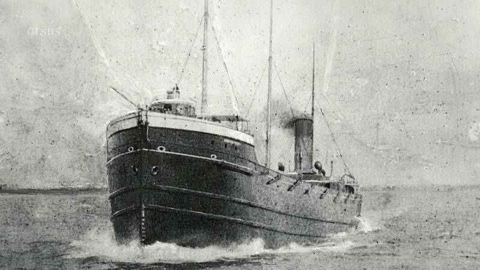

The history of cargo ships dates back thousands of years when early civilizations used wooden sailing vessels to transport goods across seas and rivers. Merchants from ancient cultures such as the Phoenicians and Greeks relied on ships to move valuable items including spices, metals, and textiles between distant ports.
During the industrial revolution, steam powered ships replaced traditional sailing vessels. Steam engines allowed ships to travel faster and more reliably regardless of wind conditions. This technological advancement greatly expanded international trade and helped global economies grow.
In the twentieth century the invention of container shipping revolutionized cargo transportation. Standardized containers allowed goods to be loaded and unloaded quickly using cranes. Modern cargo ships can now carry thousands of containers and travel efficiently between major ports around the world.